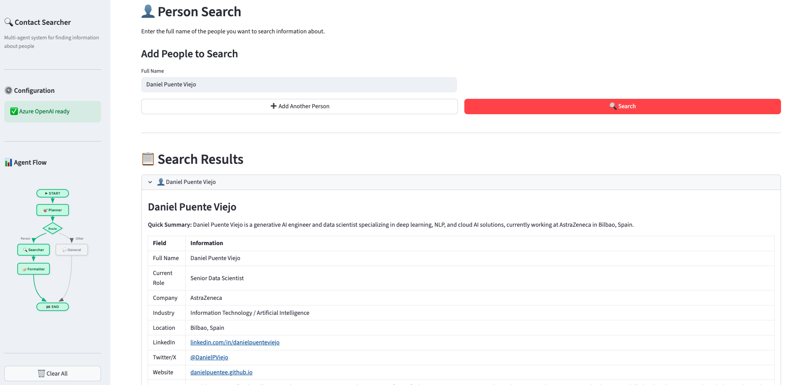

🔍 LangGraph Multi-Agent People Search
This project demonstrates how to build a multi-agent system using LangGraph to search and organize information about people from the web. The system uses Azure OpenAI for intelligent query analysis and response formatting, and Tavily for free web searches.

For the full source code and implementation details, check out the project on GitHub → GitHub repository
We leverage LangGraph's multi-agent architecture for a fluid, autonomous search process. You provide a name and surname, and the system automatically plans, routes, searches, and formats the information into clean, structured tables.
The system consists of four specialized agents working together:
- 🎯 Planner Agent: Analyzes user requests and creates execution plans.
- 🔍 Searcher Agent: Searches the web using Tavily API for relevant information.
- 📝 Formatter Agent: Organizes raw search data into structured markdown tables.
- 💬 Non-Contact Agent: Handles queries not related to finding people.
Key features of this implementation:
- Built with LangGraph for sophisticated multi-agent orchestration.
- Uses uv package manager for fast, reliable dependency management.
- Includes both Streamlit web interface and CLI mode for flexibility.
- All configuration externalized in YAML files (prompts, settings, agent parameters).
- Integrates Azure OpenAI for LLM capabilities and Tavily for web search.
This project serves as a practical blueprint for developers looking to build scalable multi-agent systems with LangGraph, showcasing best practices for agent coordination, state management, and system configuration.
Front page